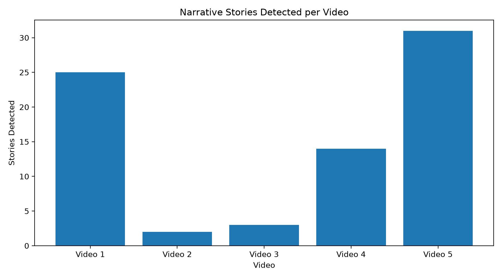
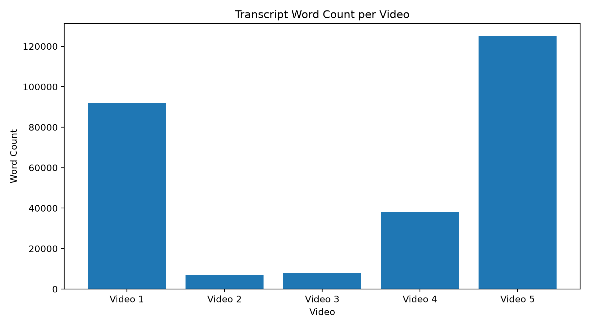
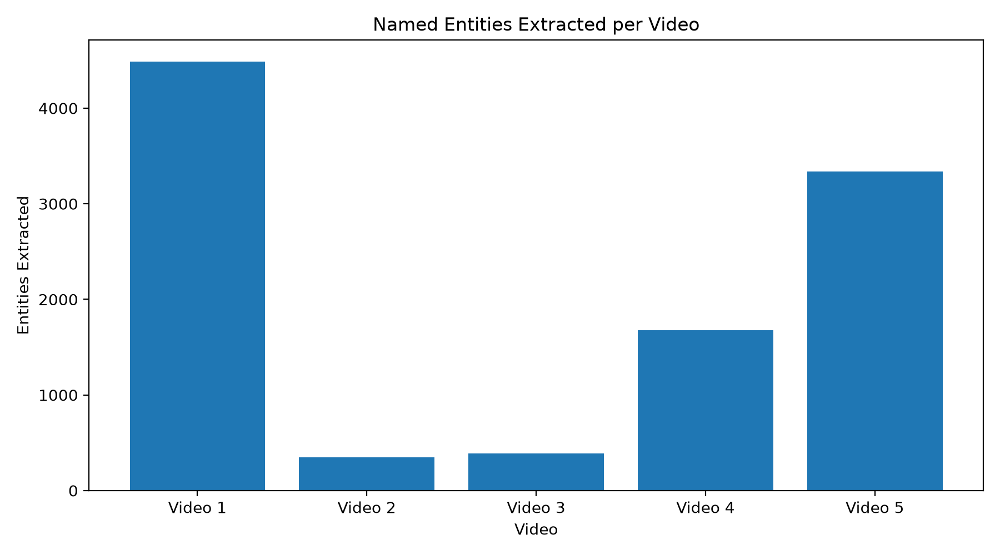

2. System Architecture
End-to-end architecture of the NLP pipeline.

A general-purpose NLP pipeline for transforming noisy ASR-generated YouTube transcripts into meaningful narrative segments enriched with entities, keywords and semantic topics.
Project overview and problem definition.
Automatic transcripts generated by Automatic Speech Recognition systems are often noisy, fragmented and difficult to organize. A long transcript may contain several different stories or topics without explicit section boundaries.
This project develops an unsupervised NLP pipeline that detects narrative boundaries based on semantic changes in the transcript. After segmentation, each narrative segment is enriched with named entities, keywords, topic information and a confidence score.
Given a noisy ASR-generated transcript from a YouTube video, automatically identify meaningful narrative segments without relying on manually labelled segmentation data.
Video presentation explaining the complete project, architecture and implementation.
Video will be embedded here after the final screen recording is uploaded.
End-to-end architecture of the NLP pipeline.
The project follows a sequence of unsupervised NLP processing stages.
The transcript is extracted from the target YouTube video.
Transcript snippets are accumulated into approximately 75-word windows.
Each window is converted into a dense semantic vector using Sentence Transformers.
Consecutive semantic windows are compared using cosine similarity.
Significant semantic changes are used as candidate narrative boundaries.
Windows between detected boundaries are combined into narrative segments.
Named entities are extracted using spaCy and regular expression based processing.
Each segment is enriched with topic labels and important keywords.
The final enriched output is stored in a structured JSON format.
Mathematical foundations behind the unsupervised segmentation process.
Each transcript window is represented as a numerical vector containing semantic information about the text.
The project uses the all-MiniLM-L6-v2 sentence-transformer model, which produces 384-dimensional embeddings.
Consecutive transcript windows are compared using cosine similarity. This measures how similar their semantic directions are.
A high similarity value suggests that two neighboring windows discuss related content, while a lower value can indicate a possible topic or narrative transition.
Instead of manually selecting one universal similarity threshold, the pipeline derives a threshold from the similarity distribution of the current transcript.
Windows with similarity below the derived threshold become candidate narrative boundaries, subject to minimum and maximum segment-size constraints.
How raw YouTube content becomes structured narrative information.
YouTube Video
│
▼
Transcript Extraction
│
▼
Transcript Snippets
│
▼
75-Word Semantic Windows
│
▼
Sentence Embeddings
│
▼
Cosine Similarity
│
▼
Adaptive Boundary Detection
│
▼
Narrative Segments
│
├───────────────┐
▼ ▼
Entity Extraction Keyword Extraction
│ │
└───────┬───────┘
▼
Topic Classification
│
▼
Confidence Score
│
▼
Structured JSONObserved processing statistics across five test videos.
These statistics summarize the outputs produced by the pipeline on the five test videos. They describe processing volume and the amount of structured information extracted from the transcripts.
Important: No manually labelled ground-truth narrative boundaries were available for these videos. Therefore, these values should not be interpreted as accuracy, precision, recall or F1-score.
Number of narrative segments detected independently for each processed video.

Total approximate transcript word volume processed for each video.

Total named entities extracted from the narrative segments of each video.

Main components implemented in the Python pipeline.
The main pipeline is implemented in src/pipeline.py.
analyze_video(video_id)
│
├── extract_transcript()
│
├── create_windows()
│
├── create_embeddings()
│
├── detect_boundaries()
│
├── build_segments()
│
├── calculate_confidence()
│
├── extract_entities()
│
├── enrich_segments()
│
└── build_final_output()The transcript is initially represented as many small ASR snippets. These snippets are accumulated into approximately 75-word windows.
WINDOW_SIZE = 75
windows = create_windows(
transcript,
window_size=WINDOW_SIZE
)Windowing reduces the number of semantic comparisons and provides a practical unit for embedding-based analysis.
model = SentenceTransformer(
"all-MiniLM-L6-v2"
)
embeddings = model.encode(
texts,
convert_to_numpy=True,
show_progress_bar=True
)The resulting matrix contains one 384-dimensional vector for every semantic window.
boundaries = detect_boundaries(
embeddings,
min_segment_windows=12,
max_segment_windows=100
)Similarity between neighboring windows is calculated first. The similarity distribution is then used to identify unusually low-similarity transitions as candidate narrative boundaries.
Named entities are extracted from each narrative segment using spaCy's NLP pipeline. Additional regular-expression processing is used to support noisy transcript patterns.
entities = extract_entities(
segment["text"]
)The final output is organized into metadata, stories and segmentation-quality information.
{
"bulletin_metadata": {
...
},
"stories": [
{
"story_id": "...",
"topic": "...",
"subtopic": "...",
"timestamp_start": "...",
"timestamp_end": "...",
"confidence_score": ...,
"raw_text": "...",
"entities": {
...
},
"keywords": [
...
]
}
],
"segmentation_quality": {
...
}
}A lightweight interface was built to make the pipeline easier to run and demonstrate.
The Streamlit application allows a user to provide a YouTube video identifier and run the complete analysis pipeline.
YouTube Video ID
│
▼
Streamlit Interface
│
▼
analyze_video()
│
▼
Narrative Segmentation
│
▼
Entity / Topic / Keyword Extraction
│
▼
Structured Resultsstreamlit run app.pyLibraries, frameworks and methodologies used in the project.
Important engineering choices made during implementation.
Keyword matching can fail when two pieces of text discuss the same idea using different vocabulary. Embeddings provide a representation based on semantic meaning.
Manually labelled narrative boundaries are expensive to create. An unsupervised method allows the pipeline to operate without requiring a labelled segmentation dataset.
Very small windows contain insufficient context, while very large windows can combine multiple topics. A fixed approximately 75-word window provides a practical balance between context and computational cost.
Different videos can have different semantic similarity distributions. An adaptive threshold reduces dependence on one manually chosen global value.
Current limitations and possible extensions.
Organization of the project repository.
.
├── data/
│ ├── video_01/
│ ├── video_02/
│ ├── video_03/
│ ├── video_04/
│ └── video_05/
│
├── docs/
│ ├── index.html
│ ├── archi_dia.png
│ └── graphs/
│ ├── stories_per_video.png
│ ├── words_per_video.png
│ └── entities_per_video.png
│
├── notebooks/
│ └── 01_data_exploration.ipynb
│
├── src/
│ └── pipeline.py
│
├── app.py
├── requirements.txt
├── .gitignore
└── README.mdProject mentor and faculty advisor.
Parth Dhola
Prof. Prithwijit Guha
Amaan Irfan Sir
Source code, notebooks, data outputs and documentation.
The complete implementation and supporting documentation are available on GitHub.